Alarm
You can monitor status of each operating service, as well as manage the status quo of alarms against service failures and their history.
Dealing Service Alarm
Following is how to deal with a failure, which occurs during service operation, through Alarm App.
1. Designating the Assignee for each Service
Designate a member who receives an alarm (Receiver) when a failure occurs in a registered service group, and a person in charge (Assignee).
Alarm - Configuration - Members-
After selecting a service group in which a member is to be edited, click the [Edit Member] button.

-
A list on the left shows all members, and that on the right shows a member who receives an alarm of the current service group.
From the left, select a member who will receive an alarm of the applicable service group and add it to the right.
-
Set permission of the member added on the right list.

Either status only is allowed to be given to a member. Such permission may be set differently for each service group.
- Receiver: The person may only receive a notification for occurrence or modification of an alarm via e-mail.
- Assignee: The person may not only receive a notification for occurrence or modification of an alarm via e-mail, but also record how the failure notified by an alarm is handled.
-
Press the [OK] button to save the changes. Check the member list for each service group to assure that a member who will receive an alarm has rightly been added.
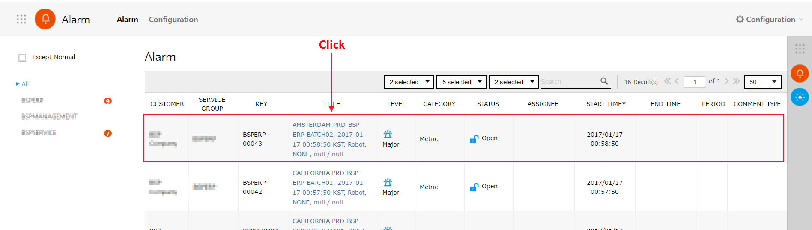
Designating Receivers and Assignees in the selected service group is completed.
Through the same procedure, Receivers and Assignees may be designated in other service groups.
2. Checking on Details of an Alarm
The Receiver or Assignee who has received an alarm may check on its details.
Alarm-
From the alarm list, select an alarm whose details are subject to be checked.
On the alarm list, you can check summary about alarms which have occurred. -
Checks on details of an alarm.

① Details: You can check detailed information about an alarm which has occurred.
② Related Issue: Shows information related to the issue which has occurred.
③ Comments: You can write a comment or check comments of other members.
④ History: Shows history of alarms which have occurred. -
Press the [Show Chart] button to check on Metric information of the time when an alarm has occurred.
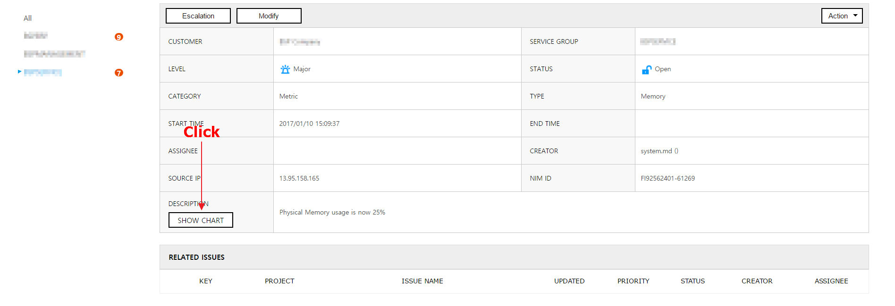
-
Metric information of the time is then indicated in a new window.
3. Processing Alarm
When the Assignee who has noticed an alarm initiates to process alarm, it marks the Assignee who is in charge and also indicates that the alarm is being processed.
3.1 Searching by Conditions
-
Select a condition to search. Click the [Status] button, then a drop-down menu appears to show available conditions for search.

-
Click the [Action] button and a drop-down list comes out. Then, click the [Start] button from the list.

-
Click the [Action] button and a drop-down list comes out. Then, click the [Start] button from the list.

-
‘Status’ of the alarm will be changed to ‘In-progress’, and 'name' of the person in charge is shown at the ‘Assignee’.
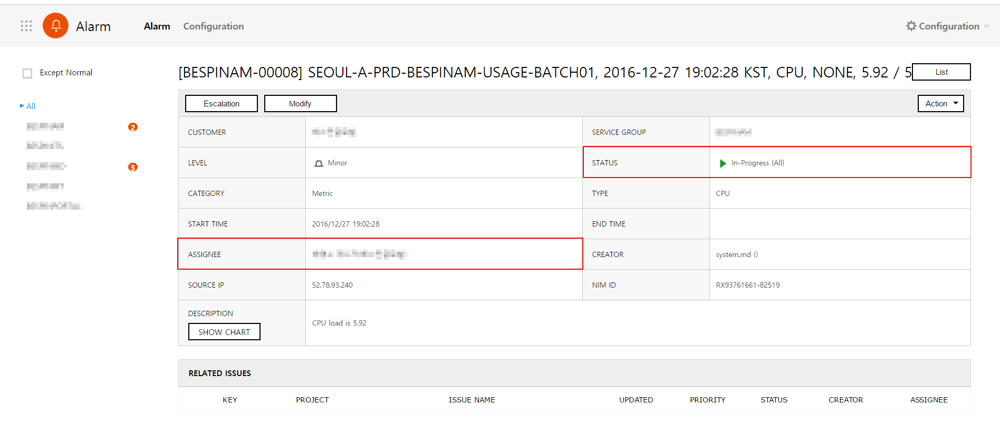
- Performs the process to resolve an alarm. Register issues required for processing alarm in Project App. Regarding how to register issues related to alarm, please refer to 4. Managing Alarm History and Related Issues below.
3.2 Changing Level of Alarm
If situation of an alarm is severe, you can upgrade a level of alarm. On the contrary, you can downgrade the alarm.
-
Move to alarm details pane by clicking the alarm you want to check in the alarm list.
-
Change 'Level' and write the reason for change on 'Description'. Then click the [Escalation] button.
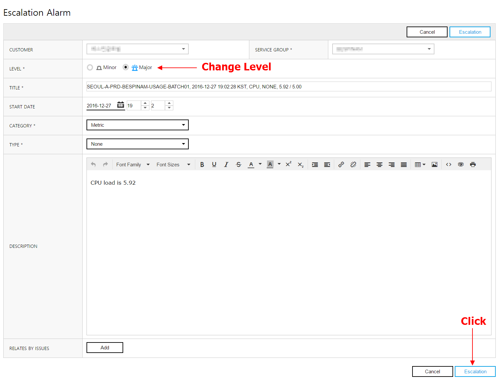
If the current 'Level' is 'Minor', it will be automatically changed to 'Major' upon clicking the [Escalation] button.
3.3 Completing Alarm Process
After completing the process of occurred alarm, shows that the alarm has been resolved.
-
On the alarm page, click the [Action] button. After a drop-down list comes out, click the [Close] button.
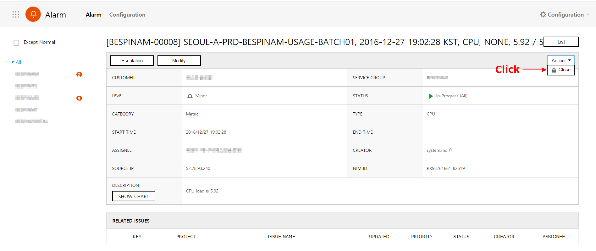
-
The “Close” pop-up will be shown. Write a comment in accordance with the process completion and click the [OK] button.

-
‘Status' of the Alarm will be changed to ‘Closed’ and 'End Time' will be shown. Also on the 'Solution', the comments written during the process completion and the time of completion will be shown.
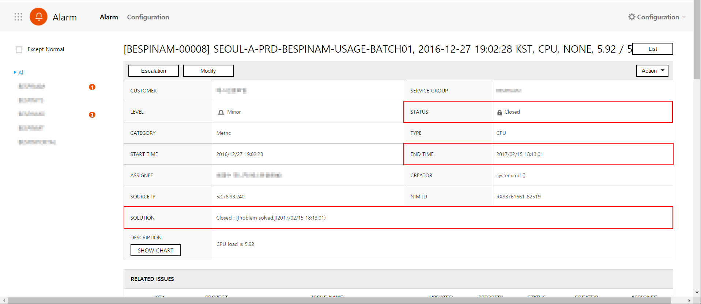
-
You can check that the alarm has been processed in the alarm list.

4. Managing History of Alarm Process and Related Issues
You can check the entire process of an alarm, from the beginning to the end. Also, you can register the related issues which have occurred during the process.
4.1 View Process History of Alarm
-
On the alarm details pane, go to the “Active History” at its very bottom.
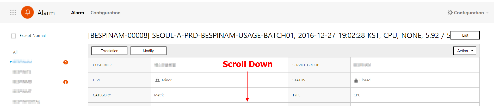
-
In the “Active History”, everything recorded during the process is listed on chronological basis, including initiation of an alarm; written comments; edited details; and completion of the process. Under initial configuration, the latest history is shown at the top.
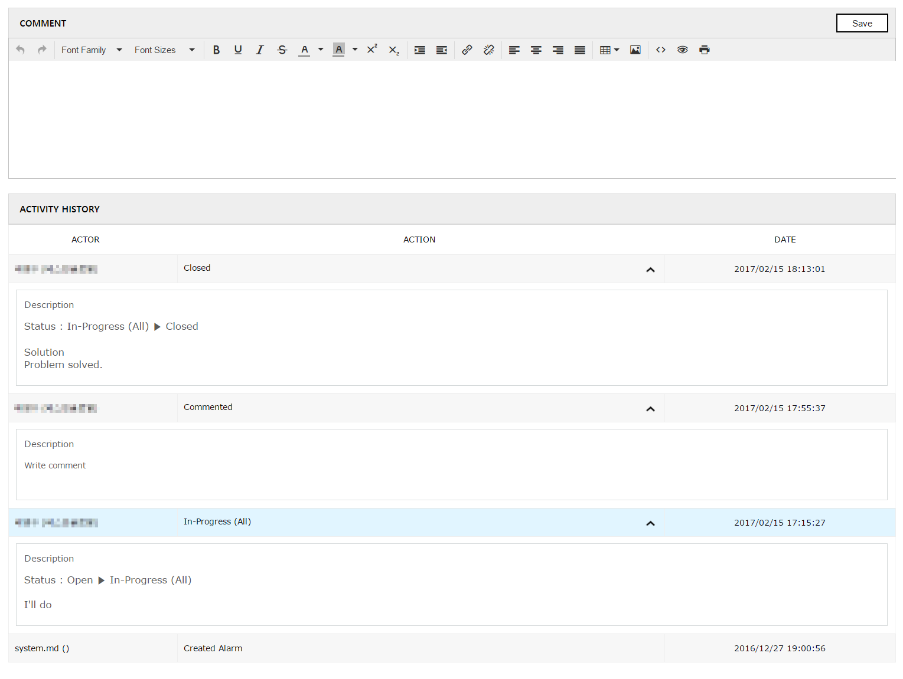
-
You can adjust Alignment of History by clicking table headers.

4.2 Registering Related Issue
You can register issues required to resolve alarm on Project App, and link them to alarm details.
With this, you can immediately check what process is ongoing for alarm resolution. On the other hand, you can also check what alarm does this issue is resolving.
-
On the alarm details pane, click the [Modify] button.

-
On the “Modify Alarm” pane, click the [Add] button of the ‘Relates by issue’ item.
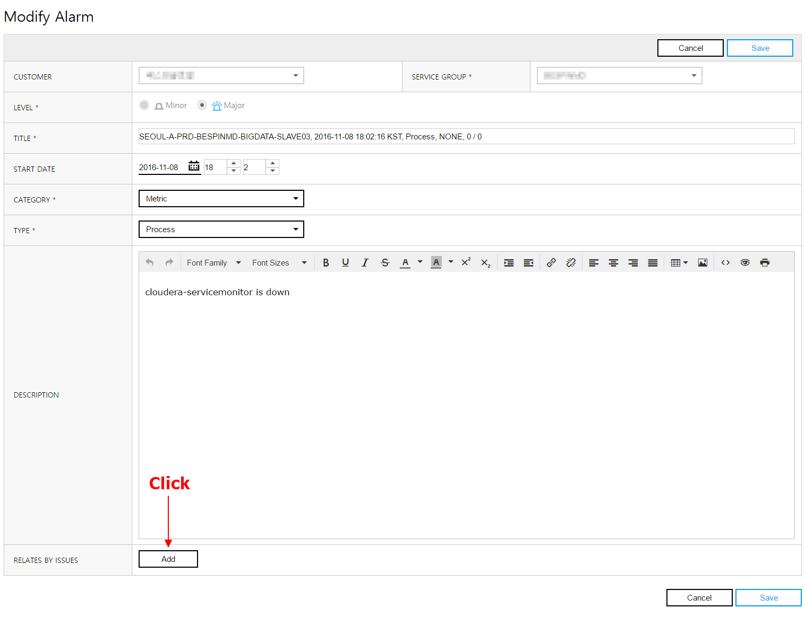
-
A “Search for Issues” pop-up is shown. This pop-up has the list of issues registered on Project App. Linked issues may be searched with the title of project, status, or name. From the list, select a issue you want to link and then click the [OK] button.
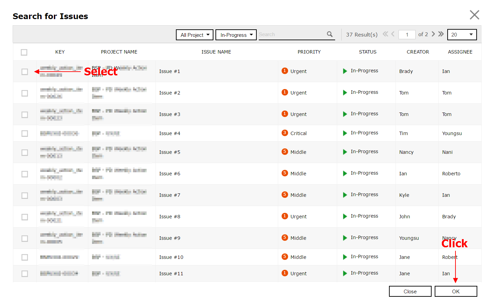
5. Searching Alarm History
You can search the History and its details you want to check by setting conditions and entering keywords.
5.1 View Alarm History per Service Group
-
Select a service group you want to check an alarm.

-
Alarm history in the selected service group is shown on the alarm list.
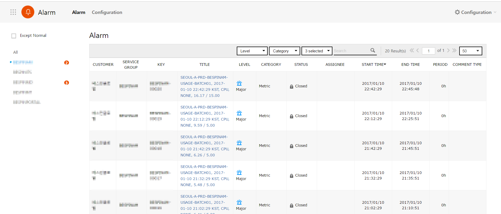
You can check Service Group which alarm has currently occurred in Service Group list.
For the Service Group which alarm has occurred, the number of occurred alarm will be shown next to the Service Group name.
5.2 Searching by Conditions
-
Select a condition you want to search. Click the [Level], [Category] or [Status] button, then a drop-down menu appears to show available conditions for search.
-
Select 'Level'
-
Select 'Category'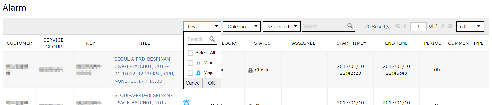 -
Select 'Status'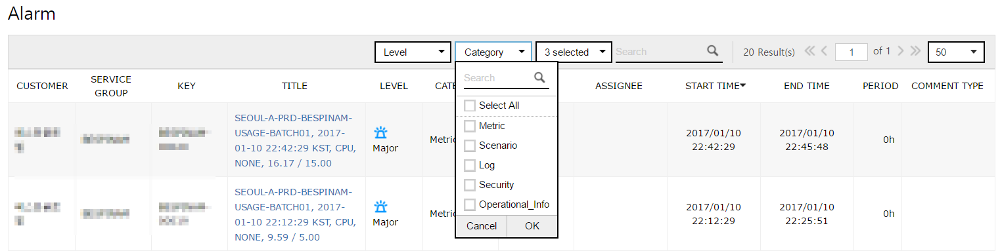
-
-
Click the [OK] button of the drop-down menu.
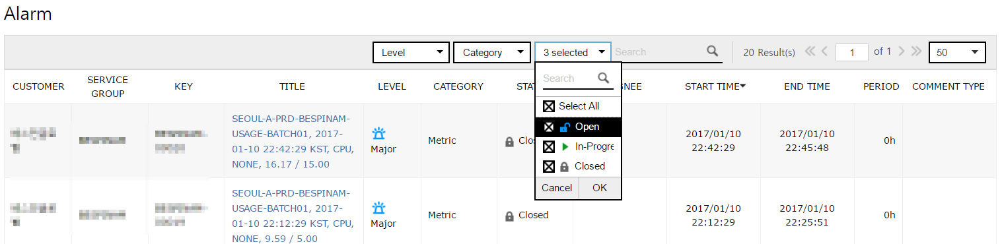
-
You can check the search result with the selected condition on the alarm list.

5.3 Searching by Keywords
-
Enter a keyword you want to search on the search box and click [Search] button or press [Enter].
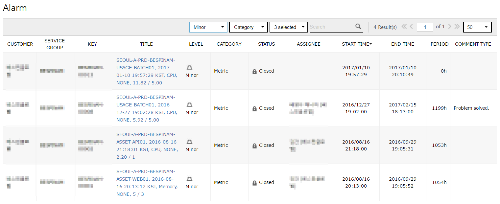
-
The results which title is identical to the keyword will be shown on the list. Texts identical to the keyword will be highlighted.